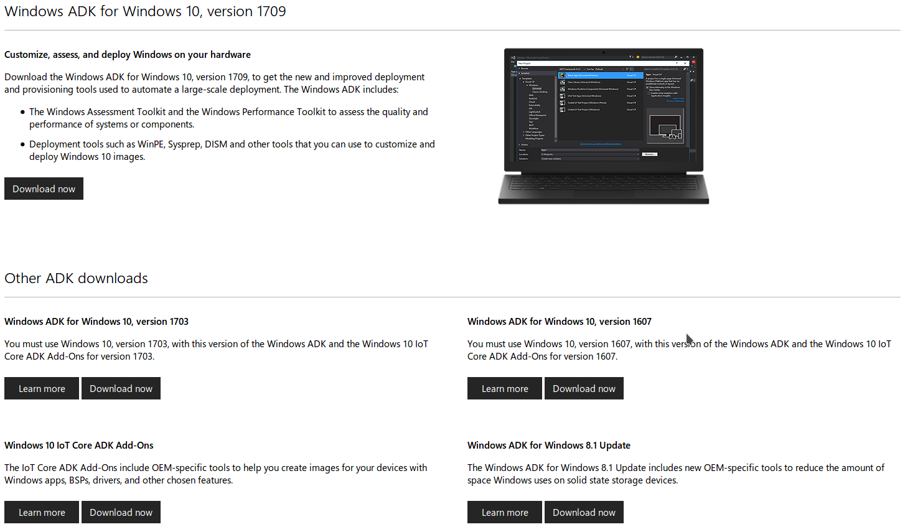
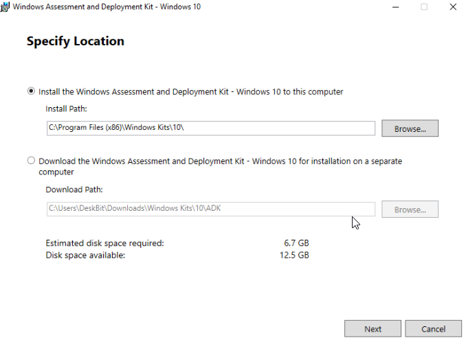
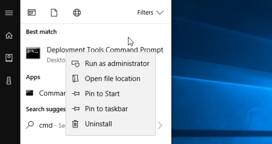

WinPE10 and Microsoft iSCSI Initiator
1- Download Windows Adk
Download Windows Assessment and Deployment Kit (Windows ADK) beased on your Windows 10 Version

2- Run AdkSetup.exe
Specify your instalition location

3- Run Command Prompt
Right click on "Deployment and Imaging Tools Environment" and run as administrator

4- Creat a WinPe drive
Create a working copy of the Windows PE files. Specify either x86, amd64, or arm:
copype amd64 C:\winpe10
5- Mount boot.wim
5-1- Create folder "mount" on the root of C drive
5-2- Use the following DISM commands to mount the boot.wim:
DISM /Mount-Wim /WimFile:C:\winpe10\media\sources\boot.wim /Index:1 /MountDir:C:\Mount
6- Copy required files
Copy the following files from your computer to the corresponding folder of the mounted Windows Imaging Format (WIM):
\windows\System32
iscsicli.exe
iscsicpl.dll
iscsicpl.exe
iscsidsc.dll
iscsied.dll
iscsiexe.dll
iscsium.dll
iscsiwmi.dll
\windows\System32\Drivers
msiscsi.sys
\windows\System32\en-US
iscsicpl.dll.mui
iscsicpl.exe.mui
iscsidsc.dll.mui
iscsiexe.dll.mui
7- Make startnet.cmd
Copy following commands to the "c:\mount\windows\system32\startnet.cmd"
wpeinit
wpeutil WaitForNetwork
wpeutil WaitForRemovableStorage
c:\setup.exe
8- Unmount boot.wim
Use the following DISM command to unmount the Boot.wim:
DISM /Unmount-Wim /MountDir:C:\Mount\BootWIM /Commit
9- Make ISO file
Use the following Command to make a ISO file:
MakeWinPEMedia /ISO C:\winpe10 c:\winpe.iso